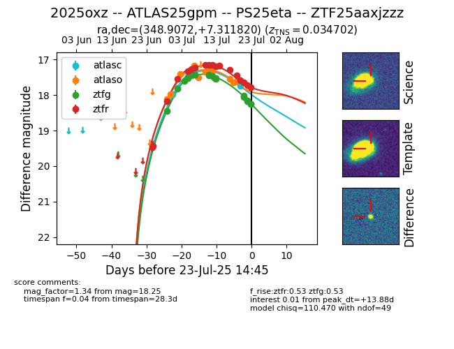

Target ZTF25aaxjzzz at 2025-07-23 14:45, see:
FINK: fink-portal.org/ZTF25aaxjzzz
Lasair: lasair-ztf.lsst.ac.uk/objects/ZTF25aaxjzzz
ALeRCE: alerce.online/object/ZTF25aaxjzzz
TNS: wis-tns.org/object/2025oxz
YSE: ziggy.ucolick.org/yse/transient_detail/2025oxz
alt names
ZTF25aaxjzzz (ztf,fink)
2025oxz (tns,yse)
ATLAS25gpm (atlas)
PS25eta (panstarrs)
coordinates:
equatorial (ra, dec) = (348.9072,+7.31182)
galactic (l, b) = (85.5277,-48.47783)
photometry
last atlasc=17.75, atlaso=17.62, ztfg=18.25, ztfr=17.79
3 atlasc, 12 atlaso, 20 ztfg, 18 ztfr detections
